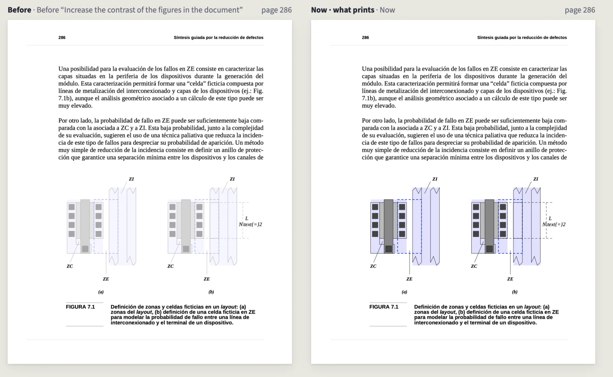

CollectionsEarly access
Describe and share your collections.
Keep images, documents and data in one place. The AI writes titles, descriptions and tags; you approve them.

Smart tools that ask first
Tools for your collections, your website and your documents. The AI does the work; you approve every change.
The tools

Describe and share your collections.
Keep images, documents and data in one place. The AI writes titles, descriptions and tags; you approve them.

Change a website by pointing at it.
Point at any part of a page and say what should change. Works on its own or as a plugin in Claude.

Review, correct and translate long documents.
The AI works one section at a time and keeps your layout. You accept, change or undo each proposal.

How it works
A photo, a part of a page, a section of a document.
It describes, writes, corrects or translates, and shows you the result.
Accept it, ask for something else, or undo it. Nothing changes without you.
See it work
Work with us
Run the tools yourself, read the code, or try them with your own content. We would like to hear from you.